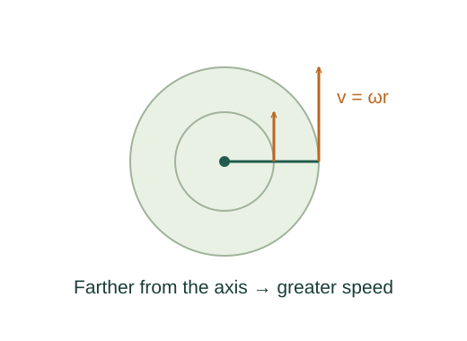

Derive the rotational kinematic equations
An angular coordinate is arc distance divided by radius. Its time derivatives define angular velocity and acceleration.
What the symbols mean
θ: signed angular coordinate in radians; ω = dθ/dt; α = dω/dt; r: fixed perpendicular radius.
When this applies
Fixed-axis rotation; α constant for the three finite-interval equations.

Define angular rates and radian distance
An angular coordinate is arc distance divided by radius. Its time derivatives define angular velocity and acceleration.
Integrate constant angular acceleration
Accumulating α gives ω, then accumulating ω gives θ. This is the same mathematical operation used for straight-line motion.
Go deeper at this stepWhy does accumulation introduce ½?Why an integral accumulates a rateEliminate time
For a straight-line angular-velocity graph its average is (ω₀ + ω)/2. Substitute αt = ω − ω₀ to eliminate t.
Differentiate the arc relation
For fixed r, s = rθ implies tangential speed rω and tangential acceleration rα. Circular curvature supplies the separate radial component.
Where each equation comes from
Derived equations link to an argument below. Definitions, physical postulates and constitutive models are identified as the inputs of that argument.
Derivation of the main resultDerived result
Conditions: Fixed-axis rotation; α constant for the three finite-interval equations.
- Define angular rates and radian distance. An angular coordinate is arc distance divided by radius. Its time derivatives define angular velocity and acceleration. Explain the equation used in step 1 ↗
- Integrate constant angular acceleration. Accumulating α gives ω, then accumulating ω gives θ. This is the same mathematical operation used for straight-line motion. Explain the equation used in step 2 ↗ Why does accumulation introduce ½? ↗
- Eliminate time. For a straight-line angular-velocity graph its average is (ω₀ + ω)/2. Substitute αt = ω − ω₀ to eliminate t. Explain the equation used in step 3 ↗
- Differentiate the arc relation. For fixed r, s = rθ implies tangential speed rω and tangential acceleration rα. Circular curvature supplies the separate radial component. Explain the equation used in step 4 ↗
Equation in step 1Definition
Definition. This relation is an explicit input at this level of the model, rather than a result proved by the equations that use it.
An angular coordinate is arc distance divided by radius. Its time derivatives define angular velocity and acceleration.
Scope: Fixed-axis rotation; α constant for the three finite-interval equations.
Equation in step 2Derived result
What is being shown: Integrate constant angular acceleration
Accumulating α gives ω, then accumulating ω gives θ. This is the same mathematical operation used for straight-line motion.
Earlier results used in this argument:
- θ ≡ s/r; ω ≡ dθ/dt; α ≡ dω/dt (Definition)
Equation in step 3Derived result
What is being shown: Eliminate time
For a straight-line angular-velocity graph its average is (ω₀ + ω)/2. Substitute αt = ω − ω₀ to eliminate t.
Earlier results used in this argument:
- θ ≡ s/r; ω ≡ dθ/dt; α ≡ dω/dt (Definition)
- ω = ω₀ + αt; Δθ = ω₀t + ½αt² (Derived result)
Equation in step 4Derived result
What is being shown: Differentiate the arc relation
For fixed r, s = rθ implies tangential speed rω and tangential acceleration rα. Circular curvature supplies the separate radial component.
Earlier results used in this argument:
- θ ≡ s/r; ω ≡ dθ/dt; α ≡ dω/dt (Definition)
- ω = ω₀ + αt; Δθ = ω₀t + ½αt² (Derived result)
- Δθ = ½(ω₀ + ω)t = ωt − ½αt²; 2αΔθ = ω² − ω₀² (Derived result)
A worked example
At α = 2 rad/s², starting at rest for 3 s gives ω = 6 rad/s and angular displacement 9 rad.
Derivation behind this calculation ↗A point to keep straight
An angular acceleration can coexist with radial acceleration. They are perpendicular components, not interchangeable quantities.
Check the assumptions and derivation ↗